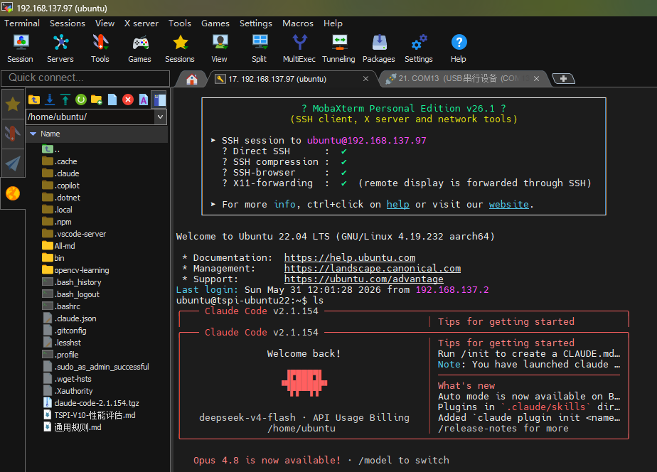
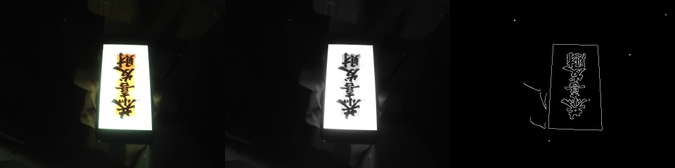
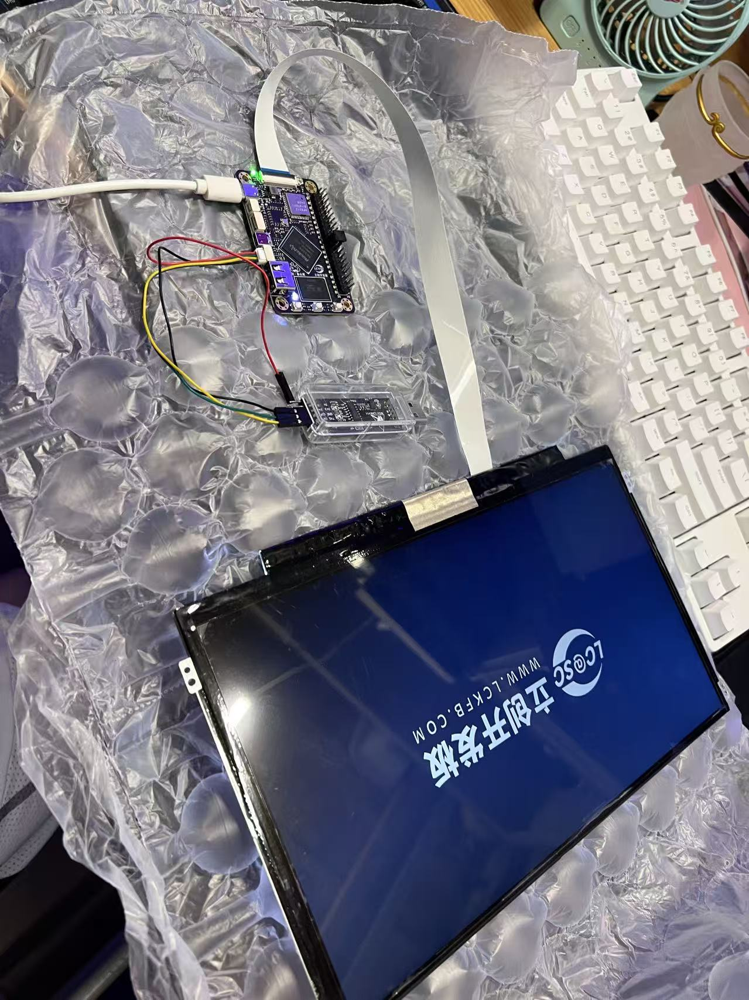
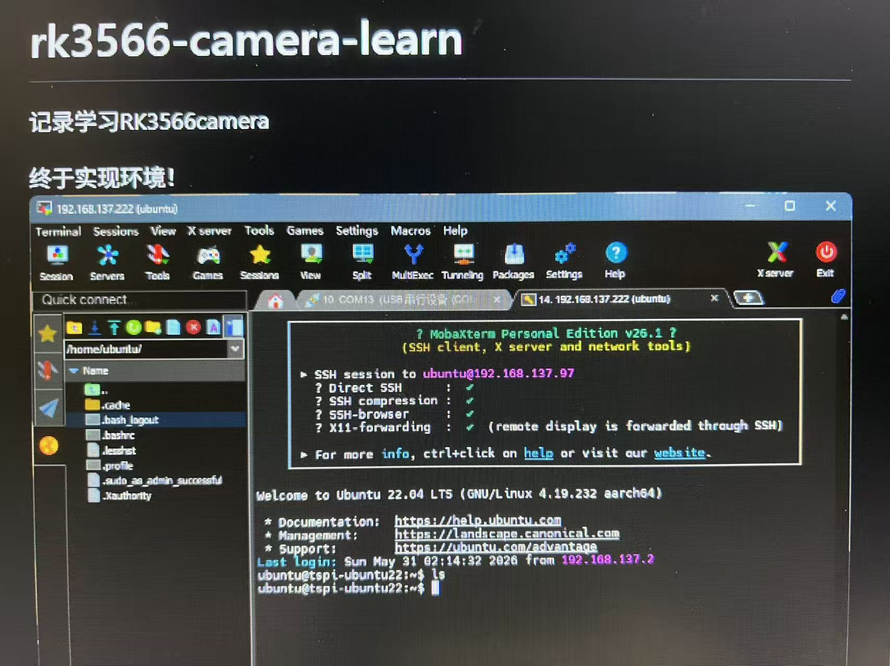

← 返回项目列表
RK3566 视觉学习与自制 Ubuntu 系统实践
Buildroot 验证 · Ubuntu rootfs 制作 · Wi-Fi/SSH 修复 · 摄像头链路 · 本地 AI 辅助调试
查看 GitHub 仓库
这是一个正在持续迭代的 RK3566 嵌入式视觉学习项目。项目重点不是包装成完整产品，而是把系统构建、驱动调试、摄像头链路和视觉开发环境一步步跑通，并把每次踩坑记录成可复盘的工程文档。

本地 AI 代码助手在 RK3566 板端 Ubuntu 22.04 环境运行
项目背景
我最初在泰山派 RK3566 上刷了官方提供的 Ubuntu 20.04 系统，但发现这个系统没有 eDP 屏幕驱动——板子启动后屏幕不亮，只能通过串口操作。为了解决屏幕显示问题，我开始研究 RK3566 的显示链路和驱动框架，基于官方 SDK 内核源码编译了 eDP 驱动模块，最终把屏幕点亮。
屏幕跑通之后，我真正想做的事情是学习摄像头和 OpenCV 视觉开发。但当时板上的 Ubuntu 20.04 环境存在不少问题：apt 被损坏的包卡住、开发工具不全、Wi-Fi 固件路径不匹配、系统配置零散不可复现。与其在一个不干净的旧系统上修修补补，不如基于官方 SDK 内核，自己用 debootstrap 从零制作一个干净的 Ubuntu 22.04 rootfs，把 eDP 驱动、Wi-Fi 固件、SSH、开发工具链和视觉依赖一次性配齐。
于是这个项目从"点亮屏幕"开始，逐步演变成：Buildroot 验证硬件能力 → 刷 Ubuntu 20 发现问题 → 编译 eDP 驱动 → 制作 Ubuntu 22.04 rootfs → 修复 Wi-Fi/SSH → 验证摄像头链路 → 接入本地 AI 辅助调试。整个过程始终在同一块板子上围绕同一个内核版本展开，每次改动都有记录可复盘。
技术栈
RK3566
Buildroot
Ubuntu 22.04
V4L2
GStreamer
MPP
RGA
OV5695
AP6212 Wi-Fi
SSH
rootfs
Linux 4.19.232
RKDevTool
Node.js
技术路线
阶段 1：官方 Buildroot 链路跑通
- 编译泰山派 Linux SDK
- 解决 Buildroot 依赖下载失败问题
- 处理 recovery.img 缺失导致 update.img 打包失败
- 使用 RKDevTool 烧录
- 成功进入板端 Linux 终端
- 板端内核实际显示为 Linux 4.19.232 aarch64
阶段 2：Buildroot 下验证摄像头和多媒体能力
- 摄像头 OV5695 · 主节点 /dev/video0 · 推荐格式 NV12
- GStreamer 可用 · RGA 可用 · MPP JPEG/H.264 编码可用
- kmssink 可本地显示 · rknpu 0.7.2 驱动已初始化
阶段 3：刷 Ubuntu 20.04，发现 eDP 无驱动
- 刷入官方 Ubuntu 20.04 系统
- 系统能启动、串口能登录，但 eDP 屏幕不亮
- 排查确认：官方 Ubuntu 20.04 未集成 eDP 屏幕驱动
- 基于官方 SDK 内核源码，编译 eDP 驱动模块并加载
- 屏幕点亮，为后续视觉学习和桌面调试打基础
阶段 4：配置网络和 SSH，解决 apt 依赖问题
- 串口进入系统 · 配置 Wi-Fi 或 USB 网络共享
- 处理 apt 被损坏 libmali 包卡住的问题
- 安装 openssh-server，处理版本一致性问题
- 配置 sshd_config 允许 root/密码登录
- 跑通 SSH 远程登录
阶段 5：制作 Ubuntu 22.04 rootfs（为 OpenCV 视觉学习做准备）
- 使用 debootstrap 制作 arm64 Ubuntu 22.04 rootfs
- 目标：搭建 Python/OpenCV 视觉开发环境
- 安装 openssh-server、NetworkManager、Python、pip、venv、build-essential、cmake、v4l-utils、i2c-tools 等
- 基于官方 SDK 内核 4.19.232，保持内核不变替换 rootfs
- 规划 eMMC 放系统，SD 卡 /data 放源码、模型、数据集、虚拟环境、编译目录和日志
阶段 6：修复 Ubuntu 22.04 下 AP6212 Wi-Fi 固件问题
- wlan0 存在但不可用 · dmesg 显示 bcmdhd 找不到固件
- 根因是 Ubuntu rootfs 缺少 Rockchip 驱动期望的 /vendor/etc/firmware/ 目录
- 固化 fw_bcm43438a1.bin、nvram_ap6212a.txt、config.txt 进 rootfs
- 整包过大改用 RKDevTool 分区烧录
阶段 7：接入本地 AI 辅助开发
- USB 网络共享和 SSH 已跑通 · Node.js 和 npm 可用
- 通过 npm 路线安装本地终端代码助手
- 避开不兼容的 ARM64 预编译二进制
- 用它辅助分析 dmesg、检查网络、生成自启动脚本、整理摄像头调试流程
当前成果
✅ 官方 SDK 编译、打包、烧录链路跑通
✅ Buildroot 系统启动成功
✅ 基于 SDK 内核源码编译 eDP 驱动，点亮屏幕
✅ Ubuntu 22.04 rootfs 制作路线跑通
✅ AP6212 Wi-Fi 固件路径问题定位并修复
✅ SSH 远程登录与网络共享可用
✅ OV5695 摄像头节点和媒体拓扑完成初步分析
✅ /dev/video0、NV12、GStreamer、RGA、MPP 能力完成验证
✅ JPEG 抓图和 H.264 硬件编码路线完成验证
✅ 本地 AI 辅助开发流程接入板端学习过程
视觉链路体检
| 检查项 | 状态 / 说明 |
|---|
| 摄像头 | OV5695 MIPI CSI |
| 主视频节点 | /dev/video0 |
| 最大分辨率 | 2592 × 1944 |
| 推荐采集格式 | NV12 |
| 显示输出 | kmssink |
| RGA | 可用 |
| MPP H.264 编码 | 可用 |
| NPU 驱动 | rknpu 0.7.2 |
| 系统阶段 | Buildroot 已验证，Ubuntu 22.04 持续完善中 |
/dev/video 节点理解
| 设备节点 | Rockchip 名称 | 用途 |
|---|
| /dev/video0 | rkisp_mainpath | ISP 主路输出，普通采集首选 |
| /dev/video1 | rkisp_selfpath | ISP 辅路输出，可用于预览或不同分辨率 |
| /dev/video2/3/4 | rkisp_rawwr | Raw 数据写入通道 |
| /dev/video5/6 | rkisp_rawrd | Raw 数据读取回灌通道 |
| /dev/video7 | rkisp-statistics | ISP 统计信息（3A） |
| /dev/video8 | rkisp-input-params | ISP 参数输入 |
普通预览、拍照、录像优先用 /dev/video0，格式选 NV12。双路输出用 video0 + video1。Raw 或 ISP 调试关注 rawwr、rawrd、statistics、input-params 节点。
关键命令展示
视觉体检
ls /dev/video*
ls /dev/media*
ls /dev/v4l-subdev*
v4l2-ctl -d /dev/video0 --list-formats-ext
media-ctl -p
dmesg | grep -i rknpu
单帧抓图
gst-launch-1.0 -e v4l2src device=/dev/video0 num-buffers=1 \
! 'video/x-raw,format=NV12,width=1920,height=1080,framerate=30/1' \
! mppjpegenc ! filesink location=/tmp/frame.jpg
H.264 硬件录像
gst-launch-1.0 -e v4l2src device=/dev/video0 num-buffers=300 \
! 'video/x-raw,format=NV12,width=1920,height=1080,framerate=30/1' \
! mpph264enc ! h264parse ! filesink location=/tmp/test.h264
播放 H.264
gst-launch-1.0 filesrc location=/tmp/test.h264 \
! h264parse ! mppvideodec ! kmssink
摄像头视觉测试

OV5695 摄像头采集 + OpenCV 边缘检测与轮廓提取
最有价值的排错案例：AP6212 Wi-Fi 固件路径
问题现象
Ubuntu 22.04 能启动，eDP 有显示，串口能登录，但 Wi-Fi 不可用。wlan0 能看到但状态异常。
排查过程
wlan0 存在
→
ip link set wlan0 up 失败
→
dmesg 显示 bcmdhd 进入 Wi-Fi 初始化
→
Wi-Fi GPIO 上电成功
→
SDIO 枚举成功
→
驱动下载 firmware 失败
→
/vendor/etc/firmware 不存在
根因
驱动期望 /vendor/etc/firmware/fw_bcm43438a1.bin，但 Ubuntu rootfs 没有 /vendor/etc/firmware/ 目录。
这不是 SDIO、GPIO、电源或 DTS 主体问题，而是 rootfs 移植时 firmware 路径没有带过来。
修复
- 把
fw_bcm43438a1.bin、nvram_ap6212a.txt、config.txt 放入 Ubuntu rootfs 的 /vendor/etc/firmware/
- 重新制作 rootfs.img
- 由于 update.img 过大导致整包加载失败，改用 RKDevTool 分区烧录方式烧录 rootfs.img
这不是简单缺文件，而是一次 rootfs 移植中 firmware 路径差异导致的真实问题定位。排查路径覆盖了网络接口、内核日志、GPIO/SDIO 链路和文件系统结构。
分区烧录参考
| 分区名 | 镜像文件 |
|---|
| loader | MiniLoaderAll.bin |
| parameter | parameter.txt |
| uboot | uboot.img |
| misc | misc.img |
| boot | boot.img |
| rootfs | rootfs.img |
| oem | oem.img |
| userdata | userdata.img |
| recovery | （无 recovery.img，取消勾选） |
为什么要从 Buildroot 走到 Ubuntu 22.04
Buildroot 的价值
Buildroot 轻量、启动快，适合用来快速验证官方 SDK 编译链路、内核启动、驱动加载和多媒体硬件能力。我先用 Buildroot 确认 RK3566 的摄像头、RGA、MPP、NPU 都能正常工作，这一步让后续系统切换有了硬件基线。
Ubuntu 20.04 的尝试和问题
Buildroot 缺少 Python 和常用开发工具，做视觉学习不够方便。我刷了官方 Ubuntu 20.04，但遇到两个核心问题：一是 eDP 屏幕驱动缺失——系统能启动但屏幕不亮，只能串口操作；二是 apt 被损坏的包卡住，装软件很困难。为了点亮屏幕，我基于官方 SDK 内核源码编译了 eDP 驱动模块并成功加载。这一步让我意识到：与其在一个不干净的旧系统上修修补补，不如从零做一个自己完全可控的 rootfs。
为什么要自制 Ubuntu 22.04 rootfs
核心目标是学习 OpenCV 视觉开发。我需要一个干净的 Linux 环境，能装 Python、OpenCV、pip、venv 和编译工具链，同时保持与官方 SDK 同一套内核（4.19.232），避免内核和驱动不匹配。自制 rootfs 的意义在于：
- 不是只会刷别人做好的系统，而是理解 rootfs 结构、firmware 路径、modules 加载和分区烧录
- eDP 驱动、Wi-Fi 固件、SSH 配置都可以固化进 rootfs 模板，后续重烧即用
- 后续改驱动、改 DTS、做 V4L2 摄像头链路时对系统结构更有掌控力
| Buildroot | Ubuntu 20.04 | Ubuntu 22.04（自制） |
|---|
| 体积 | 轻量 | 中等 | 中等 |
| eDP 显示 | 设备树驱动 | 缺失，需自编译 | 已固化驱动模块 |
| Python3 | 默认没有 | apt 安装 | 已内置 pip/venv |
| 视觉开发 | 不适合 | 勉强可用 | OpenCV + 工具链就绪 |
| 系统可控性 | 需重编 Buildroot | 依赖官方镜像 | 完全自控 rootfs |
本地 AI 辅助开发接入
这个项目中，我尝试把本地 AI 代码助手接入到真实嵌入式 Linux 开发流程中。它不是替代调试，而是作为终端里的辅助工具，帮助我整理命令、分析日志、生成脚本、复盘问题。例如：
- 网络不通时辅助梳理 nmcli、ip、systemctl 检查流程
- 摄像头调试时辅助整理 V4L2、media-ctl、GStreamer 命令
- 系统移植时辅助记录 rootfs、firmware、modules 和烧录步骤
- 辅助检查系统负载、网络状态、SSH 状态
- 辅助分析 dmesg、/dev/fb0
- 生成 Wi-Fi 自动重连脚本和 systemd 服务
接入过程踩过的坑：ARM64 预编译二进制受 glibc、内核、CPU 指令集兼容性影响可能无法运行（如 GLIBC_2.38/2.39 not found、Bus error）；不要跳过 npm postinstall；删除工作目录后需 cd ~ 避免 npm 报错；模型名/接口名先用最稳定的兼容配置。
后续计划
- 完善 Ubuntu 22.04 rootfs 的可复现制作脚本
- 将 Wi-Fi、SSH、/data 挂载整理成自动化配置
- 在 Ubuntu 环境中继续完善 Python/OpenCV 视觉开发环境
- 深入 V4L2、media controller、ISP 和摄像头驱动链路
- 补充摄像头抓图、录像、显示、编码的截图和日志
- 后续尝试 RKNN/NPU 推理与 YOLO 入门实验
- 把每个阶段整理成更清晰的 Markdown 文档和网站展示
项目边界
这个项目目前仍然是学习型、验证型项目，不包装为商业视觉系统。当前重点是跑通系统构建、网络、摄像头和视觉开发基础链路，并持续记录真实问题和解决过程。
项目实物记录

RK3566 泰山派开发板

Wi-Fi 与 SSH 调试记录